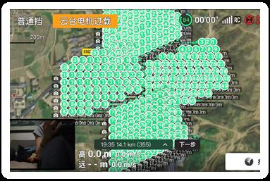
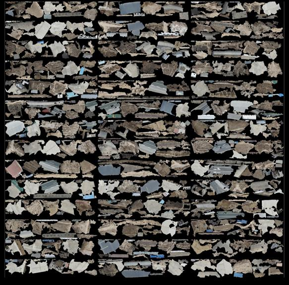

空间媒体
VR与三维建模
通过无人机航拍实现工业级三维重建与沉浸式VR体验。
通过无人机航拍实现工业级三维重建与沉浸式VR体验。
利用无人机倾斜摄影与ContextCapture Master实现工业级三维重建。采集2000+张航拍影像，生成工业场地高精度实景三维模型，部署在720云平台进行虚拟漫游与空间可视化。此外，使用Reality Composer开发了实验性VR视觉原型。
项目从场地勘测和五向倾斜摄影航线设计开始，确保建模精度。采集2000+张航拍影像，在ContextCapture Master中进行三维重建处理。模型经优化轻量化后，导出为OSGB格式，集成到HBuilderX构建的交互式三维网页可视化中，最终在720云平台发布实现虚拟漫游。

